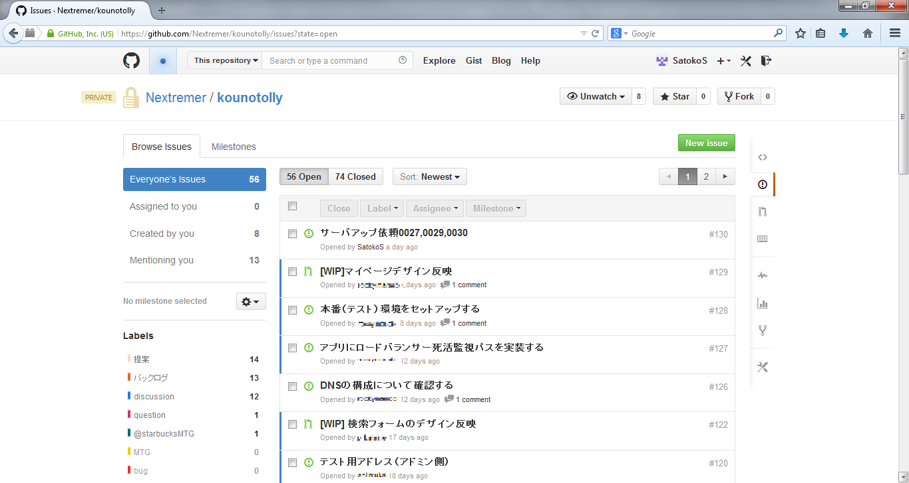
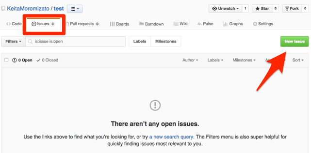

ISSUESの使い方
ISUUESとは
issueとは「重要事項、（提起された）問題」という意味で、開発メンバー間で共有が必要な事項をスレッド形式で立てられる機能です。
同じリポジトリに属するメンバーなら誰でもissueの作成、コメント、削除などの操作を行えます。issueが更新されるたびに登録したメールアドレスに連絡が届くため、見逃しも少ない（はず）です。
ISSUESの使い方
Issues機能は、リポジトリ単位に管理されています。リポジトリのトップページから[Issues]タブを選択し、[New issue]をクリックしましょう。
Issueにはタイトルとコメントを入力します。他にも設定できる項目はありますが、解説していきます。タイトルは課題の内容(〜の機能が欲しい、〜という問題がある)を端的に表現して、コメントの部分で仕様やバグの再現手順などを詳細に書いていくといいでしょう